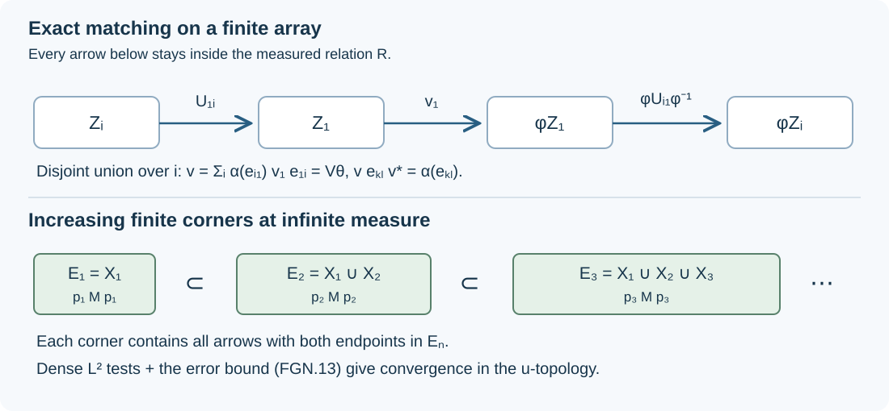

Full-group approximation of relation normalizers
For an ergodic hyperfinite relation with infinite invariant measure, an orbit symmetry can be approximated by maps that stay inside individual orbits exactly when it preserves that measure. The relevant topology sees the whole relation algebra, including operators joining different finite-measure pieces. We prove the approximation in that topology and identify its closed subgroup by a continuous measure-scaling homomorphism.
The earlier inputs are the compatible balanced arrays in 2. Arrays, balancing and exact refinement and 4. The dyadic criterion and the whole measured model through 5. Scalar matrices and modular matrix fields, measurable matching in 1. Matching sets and comparing their projections through 2. The full type II and type III comparisons, finite-corner identification in 5. Ergodicity and trace normalization after restriction, and the geometric standard implementation in 2. Applying the symmetry theorems at infinite mass through 4. Weight transport on the entire finite left ideal and 6. Changing coordinates and recognizing geometric symmetries. The equivalence with the automorphism u-topology is The precise topology of a standard implementation. These are programme proofs, with the stated hypotheses retained below.
1. The geometric topology and the assertion
Let \(R\) be an ergodic countable principal measured relation on a standard nonatomic space \((X,\mu)\). Suppose \(\mu\) is sigma-finite and invariant under every partial \(R\)-bijection, and \(R\) is hyperfinite. Write
\[ \begin{gathered} M=M(R,\mu),\qquad D=L^\infty(X,\mu),\\ \tau(a)=\int_X E_D(a)\,d\mu\quad(a\in M_+). \end{gathered} \tag{FGN.1} \]Here \(\tau\) is the faithful normal semifinite trace supplied by the relation-weight and type theorems. Ergodicity makes \(M\) a factor. Normalize \(\mu(X)=1\) in the finite case; allow \(\mu(X)=\infty\) in the infinite case.
The full group \(H=[R]\) consists of nonsingular Borel bijections \(\theta\) with \(\theta x\mathrel R x\) almost everywhere. The normalizer \(G=\operatorname{Aut}(R)\) consists of nonsingular Borel bijections \(\phi\) such that
\[ x\mathrel R y\quad\Longleftrightarrow\quad \phi x\mathrel R\phi y. \tag{FGN.2} \]All maps are modulo null sets. RSY-01 and RSY-06 identify this \(G\) with the normalizer of \(H\).
Equip \(G\) with the topology of its geometric embedding \(\phi\mapsto\beta_\phi\) into \(\operatorname{Aut}(M)\). Thus \(\phi_n\to\phi\) means
\[ \|f\circ\beta_{\phi_n}-f\circ\beta_\phi\|\longrightarrow0 \qquad(f\in M_*). \tag{FGN.3} \]RSY-06 proves that this embedded group is closed and Polish and that \(H\) is a normal Borel subgroup. Its canonical unitaries on \(L^2(R,\nu_s)\) are
\[ \begin{aligned} (W_\phi\xi)(y,x) &=h_\phi(x)^{1/2}\xi(\phi^{-1}y,\phi^{-1}x),\\ h_\phi&=\frac{d(\phi_*\mu)}{d\mu}. \end{aligned} \tag{FGN.4} \]Convergence in (FGN.3) is exactly strong convergence of these unitaries. When \(\phi\) preserves \(\mu\), \(h_\phi=1\) and
\[ W_\phi\Lambda_\tau(a)=\Lambda_\tau(\beta_\phi(a)) \qquad(a\in\mathfrak n_\tau). \tag{FGN.5} \]This holds on the entire finite left ideal, by RSY-04. For \(\theta\in H\), \(\beta_\theta=\operatorname{Ad}V_\theta\), where \(V_\theta\) is the phase-free partial-permutation operator on each counted orbit.
Approximation theorem. With the topology (FGN.3),
\[ \overline{[R]}=\{\phi\in G:\mu(\phi A)=\mu(A) \text{ for every measurable }A\}. \tag{FGN.6} \]Sections 2–5 prove sufficiency. Section 6 proves necessity, including infinite values of the trace. In the probability case every member of \(G\) preserves \(\mu\), so \([R]\) is dense in \(G\).
2. Matching diagonal sets without phases
We will need actual partial orbit maps, rather than arbitrary partial isometries between diagonal projections.
If \(A,B\subset X\) have the same positive finite measure, enumerate partial Borel bijections whose graphs cover \(R\). At each step use all points of the still-unused part of \(A\) that the current map sends into the still-unused part of \(B\). The chosen domains are disjoint, as are the ranges. Invariance removes the same mass from both sides.
The union is a measure-preserving partial orbit bijection. Its two unused remainders have equal finite measure. If they both had positive measure, ergodicity would make the saturation of the first conull; a graph in the enumeration would then connect positive parts of the two remainders. These points were available when that graph was visited, a contradiction. Both remainders are therefore null. This is the finite-measure matching argument of MRA-01–02, with no freeness requirement on a presenting action.
For its resulting map \(v:A\to B\), the operator \(V_v\) has
\[ V_v^*V_v=1_A,\qquad V_vV_v^*=1_B. \tag{FGN.7} \]Its coefficients on the graph are one. Products and inverses of these operators are the operators of the corresponding composed and inverse partial maps. Countable sums with disjoint initial and final sets are again the operators of their disjoint unions.
In particular, suppose two countable measurable partitions \((A_j)\) and \((B_j)\) have \(\mu(A_j)=\mu(B_j)<\infty\) for every \(j\). Matching corresponding cells and taking the disjoint union gives a member of \(H\) carrying every \(A_j\) onto \(B_j\). Countably many exceptional null sets can be removed together with their relation saturations. The resulting maps and their inverses are Borel on conull sets, as in RSY-01.
3. Exact agreement on a balanced matrix algebra
First assume \(\mu(X)=1\). Let \(\phi\in G\) preserve \(\mu\), and set \(\alpha=\beta_\phi\). A balanced array gives a partition \(X=Z_1\sqcup\cdots\sqcup Z_q\), with \(\mu(Z_i)=1/q\), and partial orbit maps \(U_{ij}:Z_j\to Z_i\) satisfying the matrix-unit identities. Set
\[ e_{ij}=V_{U_{ij}},\qquad B=\operatorname{span}\{e_{ij}:1\leq i,j\leq q\}. \tag{FGN.8} \]These are the phase-free matrix units of AFM-02. Their diagonal sum is one.
Section 2 gives a phase-free partial orbit isometry \(v_1\) with initial projection \(e_{11}\) and final projection \(\alpha(e_{11})=1_{\phi Z_1}\). Define
\[ v=\sum_{i=1}^q\alpha(e_{i1})v_1e_{1i}. \tag{FGN.9} \]The \(i\)-th summand is the operator of the partial orbit bijection
\[ Z_i\xrightarrow{\,U_{1i}\,}Z_1 \xrightarrow{\,v_1\,}\phi Z_1 \xrightarrow{\,\phi U_{i1}\phi^{-1}\,}\phi Z_i. \tag{FGN.10} \]Here the label \(v_1\) also denotes its underlying partial map. The initial sets partition \(X\), as do the final sets. Thus the disjoint union is a full-group map \(\theta\), and \(v=V_\theta\) is unitary. No undetermined diagonal phases enter this construction.
For every \(k,l\), multiplication of matrix units gives
\[ ve_{kl}=\alpha(e_{k1})v_1e_{1l} =\alpha(e_{kl})v. \tag{FGN.11} \]Consequently
\[ \beta_\theta(b)=vbv^*=\alpha(b)\qquad(b\in B). \tag{FGN.12} \]The construction agrees with \(\alpha\) on the whole scalar matrix algebra, not only on its diagonal.

Figure 1. Equations (FGN.9)–(FGN.12) construct the map on each array cell. In the infinite-measure argument, the arrays lie in increasing invariant finite corners and include arrows between their constituent sheets. The bound in (FGN.13) controls their action on a dense set of trace-square-integrable operators.
4. Approximation in a finite corner
AFM-04–05 supplies increasing balanced scalar matrix algebras \(B_m\) with \((\bigcup_m B_m)''=M\). Their union is dense in \(L^2(M,\tau)\). Indeed let \(K\) be the closure of \(\bigcup_m B_m\Lambda_\tau(1)\). It reduces each \(B_m\), since the algebras increase and are closed under adjoints. Its orthogonal projection therefore commutes with their bicommutant \(M\). Since \(\Lambda_\tau(1)\in K\), it follows that \(M\Lambda_\tau(1)\subset K\). The latter vectors are dense in the trace GNS space, so \(K=L^2(M,\tau)\).
Given \(a_1,\ldots,a_n\in M\) and \(\varepsilon>0\), choose one \(B_m\) and \(b_j\in B_m\) with \(\|a_j-b_j\|_{2,\tau}<\varepsilon/2\). Section 3 supplies \(\theta\in H\) whose automorphism agrees with \(\alpha\) on \(B_m\). Both automorphisms preserve the trace, so
\[ \begin{aligned} \|\beta_\theta(a_j)-\alpha(a_j)\|_{2,\tau} &\leq \|\beta_\theta(a_j-b_j)\|_{2,\tau} +\|\alpha(b_j-a_j)\|_{2,\tau}\\ &<\varepsilon. \end{aligned} \tag{FGN.13} \]Choose a countable sequence \(\Lambda_\tau(a_j)\) dense in the separable trace Hilbert space. Applying this construction to the first \(n\) vectors with error \(1/n\) gives \(\theta_n\) for which \(W_{\theta_n}\to W_\phi\) strongly: the convergence holds on the dense set by (FGN.5), and all these operators are unitaries. Their adjoints converge strongly as well, since
\[ \|(W_{\theta_n}^*-W_\phi^*)\xi\| =\|\xi-W_{\theta_n}W_\phi^*\xi\|\longrightarrow0. \tag{FGN.14} \]CL-01 now gives \(\beta_{\theta_n}\to\alpha\) in the u-topology.
The same argument works on any finite positive-measure reduction \(R|_A\), with normalized measure \(\mu(A)^{-1}\mu|_A\). RFT-05 proves its ergodicity and identifies its algebra with \(1_AM1_A\); restriction preserves hyperfiniteness. Rescaling the trace converts any desired error in the normalized norm into the corresponding error in \(\|\cdot\|_{2,\tau}\).
5. Increasing corners at infinite measure
Now let \(\mu(X)=\infty\) and let \(\phi\in G\) preserve \(\mu\). Nonatomicity and sigma-finiteness give a partition \(X=\bigsqcup_{j\geq1}X_j\) with \(\mu(X_j)=1\). Explicitly, accumulate a finite-measure exhaustion in order and cut off each next unit of mass; the continuous distribution-function cuts in MRA-02 supply the final fraction. The exhaustion ensures that only a null set is left over.
Section 2 supplies \(a\in H\) carrying each \(\phi X_j\) onto \(X_j\). Thus \(\psi=a\phi\) preserves every \(X_j\). Put
\[ E_N=\bigcup_{j=1}^N X_j,\qquad p_N=1_{E_N}, \qquad \gamma=\beta_\psi. \tag{FGN.15} \]Then \(\gamma(p_N)=p_N\), and \(\gamma|_{p_NMp_N}\) is the geometric measure-preserving automorphism of the reduced relation on \(E_N\).
The vectors \(\Lambda_\tau(b)\) with \(b\in\bigcup_Np_NMp_N\) are dense in \(L^2(M,\tau)\). In the relation representation, left multiplication by \(p_N\) cuts down the range endpoint and right multiplication cuts down the source endpoint. Their product sends a vector \(\xi(y,x)\) to
\[ 1_{E_N}(y)1_{E_N}(x)\xi(y,x), \tag{FGN.16} \]which converges to \(\xi\) in \(L^2\) by dominated convergence. Each resulting finite-corner Hilbert space has the dense bounded GNS vectors of its finite trace. This proves the asserted density.
Choose a countable dense family \(\Lambda_\tau(b_j)\) from these bounded corner vectors, recording a finite support index for each. Choose increasing \(N_n\geq n\) large enough that \(b_1,\ldots,b_n\in p_{N_n}Mp_{N_n}\). Section 4, applied to the entire reduced relation on \(E_{N_n}\), gives a full-group map \(\eta_n\) of that reduction satisfying
\[ \|\beta_{\eta_n}(b_j)-\gamma(b_j)\|_{2,\tau}<1/n \qquad(1\leq j\leq n). \tag{FGN.17} \]Extend \(\eta_n\) by the identity on \(X\setminus E_{N_n}\). It is then a member of \(H\), and its automorphism on the corner is unchanged.
Equation (FGN.17) and the dense-vector argument of Section 4 prove \(W_{\eta_n}\to W_\psi\) strongly on the whole trace Hilbert space, hence \(\beta_{\eta_n}\to\gamma\) in the u-topology. Finally
\[ \theta_n=a^{-1}\eta_n\in H,\qquad W_{\theta_n}=W_a^*W_{\eta_n}\longrightarrow W_\phi. \tag{FGN.18} \]This proves sufficiency in (FGN.6) at infinite measure.
The corner \(p_NMp_N\) contains the operators connecting different \(X_j\)'s with \(j\leq N\). Their approximation is part of (FGN.17). Approximating the separate algebras \(1_{X_j}M1_{X_j}\) would not by itself supply this control.
6. Necessity and the continuous scaling invariant
Trace preservation is closed in the u-topology. To see the relevant lower semicontinuity directly, choose increasing finite-trace projections \(p_N\uparrow1\). For \(x\in M_+\),
\[ \begin{aligned} \tau(x)&=\sup_N\tau(p_Nxp_N),\\ \tau(p_Nxp_N)&=\tau(x^{1/2}p_Nx^{1/2}). \end{aligned} \tag{FGN.19} \]The second identity is traciality; normality gives the first by the increasing operators \(x^{1/2}p_Nx^{1/2}\). Each functional \(x\mapsto\tau(p_Nxp_N)\) is bounded and normal, with norm \(\tau(p_N)\). Thus \(\tau\) is lower semicontinuous for ultraweak convergence on bounded positive sets.
If trace-preserving \(\alpha_i\) converge to \(\alpha\) in the u-topology, their standard unitaries and adjoints converge strongly. Hence \(\alpha_i(x)\to\alpha(x)\) ultraweakly for each fixed \(x\), and
\[ \tau(\alpha(x))\leq\tau(x),\qquad \tau(\alpha^{-1}(x))\leq\tau(x). \tag{FGN.20} \]The inverse convergence is CL-01. Substituting \(\alpha(x)\) into the second inequality gives the reverse of the first, including when the value is infinite. Therefore \(\tau\alpha=\tau\).
Every \(\theta\in H\) preserves \(\mu\), by partitioning its graph into presenting partial maps and using invariance on each disjoint domain. Its geometric automorphism preserves \(\tau\) by RSY-04. Any geometric limit therefore preserves \(\tau\); on \(1_A\), this says \(\mu(\phi A)=\mu(A)\). This proves necessity in (FGN.6).
For any \(\phi\in G\), uniqueness of a faithful normal semifinite trace on a factor, proved in Proportionality on a factor, gives a unique \(c(\phi)>0\) with
\[ \tau\beta_\phi=c(\phi)\tau,\qquad \mu(\phi A)=c(\phi)\mu(A). \tag{FGN.21} \]It follows that \(c(\phi\psi)=c(\phi)c(\psi)\) and \(c(\phi^{-1})=c(\phi)^{-1}\). Our convention uses the forward image of \(A\); the density in (FGN.4) is \(h_\phi=c(\phi)^{-1}\).
This homomorphism is continuous. Fix a nonzero finite-trace projection \(e\). If \(\phi_i\to\phi\), apply (FGN.19) to \(\beta_{\phi_i}(e)\) and then to the inverse automorphisms. Dividing by \(\tau(e)\) gives
\[ c(\phi)\leq\liminf_i c(\phi_i),\qquad c(\phi)^{-1}\leq\liminf_i c(\phi_i)^{-1}. \tag{FGN.22} \]The second inequality bounds the eventual upper values of \(c(\phi_i)\) by \(c(\phi)\); together the inequalities prove convergence. The argument works for nets. Consequently
\[ \overline H=\ker c \tag{FGN.23} \]is a closed normal subgroup of the Polish geometric group. Normality and the Borel property of \(H\) itself are the earlier RSY-06 assertions. In finite total measure, evaluation at \(1\) forces \(c(\phi)=1\), giving the final assertion of Section 1.
7. Realizing every positive scaling constant
For the infinite-measure relation, every \(c>0\) occurs in (FGN.21). Choose partitions \(X=\bigsqcup_{j\geq1}A_j=\bigsqcup_{j\geq1}B_j\) with \(\mu(A_j)=1\) and \(\mu(B_j)=c\). Their finite reductions at \(A_1,B_1\), equipped with their normalized probability measures, are ergodic hyperfinite nonatomic relations. The fair binary coding in AFM-04 gives a measure-preserving relation isomorphism between these normalized spaces. Denote its point map by \(f:A_1\to B_1\); in the original measure,
\[ \mu(fC)=c\,\mu(C)\qquad(C\subset A_1). \tag{FGN.24} \]Choose partial orbit bijections \(v_j:A_1\to A_j\) and \(w_j:B_1\to B_j\), preserving the unnormalized measures, with \(v_1,w_1\) the identities. Section 2 gives these maps. Define
\[ \phi(v_jx)=w_jf(x)\qquad(x\in A_1). \tag{FGN.25} \]This is a Borel nonsingular bijection on conull sets. Since all the sheet transports stay in their original orbits,
\[ v_jx\mathrel R v_ky \ \Longleftrightarrow\ x\mathrel R y \ \Longleftrightarrow\ f(x)\mathrel R f(y) \ \Longleftrightarrow\ w_jf(x)\mathrel R w_kf(y). \tag{FGN.26} \]Thus \(\phi\in G\). For a measurable \(C\subset X\), split it among the \(A_j\)'s, apply (FGN.24) to \(v_j^{-1}(C\cap A_j)\), and sum the disjoint images in \(B_j\). This gives \(\mu(\phi C)=c\mu(C)\), including infinite values. Hence the continuous homomorphism \(c:G\to\mathbb R_{>0}\) is onto.
This construction gives a normalizer for each prescribed constant. It does not assert that the choices form a homomorphism or a continuous one-parameter group.
8. Exercises with complete solutions
Exercise 1. In Section 3 verify the initial and final projections of \(t_i=\alpha(e_{i1})v_1e_{1i}\), and deduce that their sum is unitary.
Solution. Using \(v_1^*v_1=e_{11}\), \(v_1v_1^*=\alpha(e_{11})\), and the matrix-unit identities gives \(t_i^*t_i=e_{ii}\) and \(t_it_i^*=\alpha(e_{ii})\). Different terms have orthogonal initial and final projections, so \(v^*v=\sum_i e_{ii}=1\) and \(vv^*=\sum_i\alpha(e_{ii})=1\). The graph description (FGN.10) proves the additional full-group assertion.
Exercise 2. Explain why the equality of \(\alpha\) and \(\beta_\theta\) on \(B_m\) gives (FGN.13) without a bound on \(\|a_j\|\).
Solution. Write the difference as \(\beta_\theta(a_j-b_j)+\alpha(b_j-a_j)\). Each automorphism is an isometry for the trace \(L^2\)-norm, so the bound is \(2\|a_j-b_j\|_{2,\tau}\). The approximation is in that norm; no operator-norm estimate is used.
Exercise 3. A sequence of geometric automorphisms preserves the trace and converges in the u-topology. Why are both inequalities in (FGN.20) required?
Solution. Lower semicontinuity applied only to the forward automorphisms gives \(\tau\alpha\leq\tau\). Applying it to the inverse sequence gives \(\tau\alpha^{-1}\leq\tau\). For each \(x\geq0\), the latter evaluated at \(\alpha(x)\) says \(\tau(x)\leq\tau(\alpha(x))\), completing equality. This reasoning remains valid for \(+\infty\).
Exercise 4. Suppose \(c(\phi)=3\). Determine \(h_\phi\) and explain why \(\phi\) cannot be a geometric-topology limit of members of \([R]\).
Solution. Since \((\phi_*\mu)(A)=\mu(\phi^{-1}A)=\mu(A)/3\), the density is \(h_\phi=1/3\). Every full-group map has scaling constant one, and (FGN.22) proves continuity of that constant. Equivalently, (FGN.23) excludes \(\phi\) from the closure.
References
M. Takesaki, Theory of Operator Algebras III (2003), Chapter XVIII, Section 2, Lemma 2.6, pp. 322–323. The argument above gives original exposition of the full-group approximation, including finite-corner convergence and the scaling homomorphism. Its prerequisite proofs are the programme lessons linked above.
Original exposition and diagram by OpenAI Codex (AI), October 2026. New text and diagram: CC0.